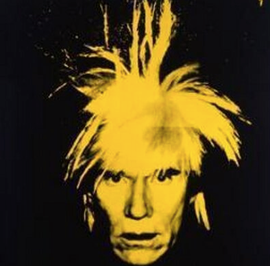
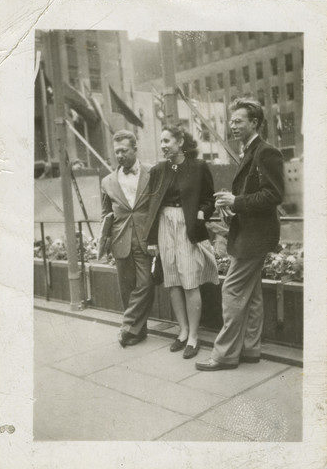
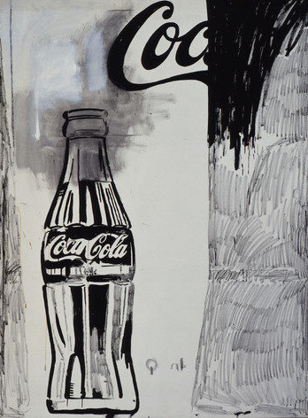

Personal Life
Early life

Andy Warhol was born Andrew Warhola on August 6, 1928, in a two-room apartment at 73 Orr Street in a working-class neighborhood in Pittsburgh, Pennsylvania. Carpatho-Rusyn immigrants from an area in the Carpathian Mountains in what is present-day Eastern Slovakia, his parents Andrej and Julia Warhola had three sons, Paul, John, and Andy, the youngest.
As a child, Warhol suffered from Sydenham chorea, a neurological disorder commonly known as St. Vitus dance, characterized by involuntary movements. When the disorder occasionally kept him home from school, Warhol would read comics and Hollywood magazines and play with paper cutouts. Growing up in Depression-era Pittsburgh, the family had few luxuries, but Warhol’s parents bought him his first camera when he was eight years old.
He attended elementary at Holmes School and took free Tam O’Shanter art classes at Carnegie Institute (now Carnegie Museum of Art) taught by Joseph Fitzpatrick, before attending Schenley High School in 1942. Recognizing his son’s talent, Andrej saved money to pay for Warhol’s college education, and he attended Carnegie Institute of Technology (now Carnegie Mellon University) from 1945 to 1949.
Early Career

Warhol's early career was dedicated to commercial and advertising art, where his first commission had been to draw shoes for Glamour magazine in the late 1940s. In the 1950s, Warhol worked as a designer for shoe manufacturer Israel Miller. American photographer John Coplans recalled that
nobody drew shoes the way Andy did. He somehow gave each shoe a temperament of its own, a sort of sly, Toulouse-Lautrec kind of sophistication, but the shape and the style came through accurately and the buckle was always in the right place. The kids in the apartment [which Andy shared in New York – note by Coplans] noticed that the vamps on Andy's shoe drawings kept getting longer and longer but Israel Miller didn't mind. Miller loved them. Warhol's "whimsical" ink drawings of shoe advertisements figured in some of his earliest showings at the Bodley Gallery in New York.
1960s

In 1960, Warhol turned his attention to the pop art movement, which began in Britain in the mid-1950s. Everyday life inspired pop artists, and their source material became mass-produced products and commercial artifacts of daily life; commercial products entered into the highly valued fine art space. In 1961, Warhol created his first pop paintings, which were based on comics and ads. Warhol’s 1961 Coca-Cola is a pivotal piece in his career, evidence that his transition from hand-painted works to silkscreens did not happen suddenly. The black and gray composition first sketched then hand painted is a blend of both pop and abstraction, which he turned away from at the beginning of his career before experimenting with it again in the 1980s.
Warhol became increasingly involved in publishing in the late 1960s, becoming fully immersed in the 1970s. In 1969, he co-founded Interview, a magazine devoted to film, fashion, and popular culture that gave him access to the stars. He published his first mass-produced book, Andy Warhol’s Index (Book), in 1967, and THE Philosophy of Andy Warhol (From A to B and Back Again) was published in 1975. Published posthumously in 1989, The Andy Warhol Diaries chronicle his daily life from November 24, 1976, through February 17, 1987, five days before he died; his assistant and friend Pat Hackett transcribed their daily phone conversations detailing the previous day’s events.
Warhol and Craig Braun designed the cover for The Rolling Stones’s album Sticky Fingers in 1971, and the design was nominated for a Grammy Award. He had been commissioned previously for album cover designs and painted portraits, but in the 1970s he began to receive hundreds of commissions from socialites, music and film stars, and others. He was a regular at Studio 54, the famous New York disco, along with celebrities such as fashion designer Halston, Liza Minnelli, and Bianca Jagger.
Death
Warhol died in Manhattan at 6:32 a.m. on February 22, 1987 at age 58. According to news reports, he had been making a good recovery from gallbladder surgery at New York Hospital before dying in his sleep from a sudden post-operative irregular heartbeat.